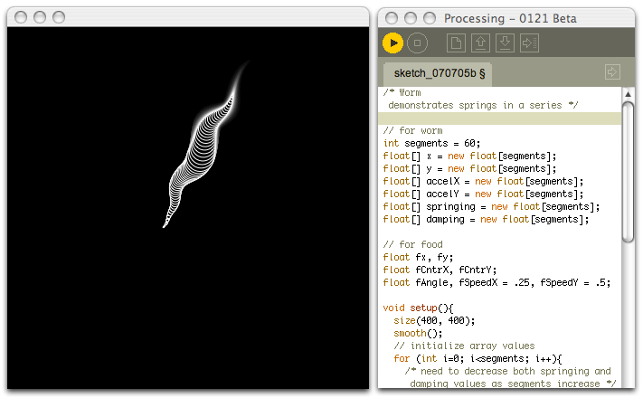

A First, Fat Book For Processing

Hey, alright, there’s a new book titled Processing: Creative Coding and Computational Art that looks to be the first textbook covering the Proce55ing language! Like most programming books, it looks morbidly obese in photos but the review posted on Abstract Machine says to skip the first few chapters and just jump straight into the fun stuff:
We’ll be dog-earing many pages, meethinks. Chapter 11 on “Motion” is worth the price of admission alone: it gives you all the basics you need to know about making things move around using all the basic rules of gravity, collision, reflection, etc. And Chapter 13 is a fairly good introduction to d*3 that we will probably use as an introduction in the atelier. So all-in-all, it’s a good classroom book, which appears to be by design.
If you’ve considered learning ActionScript and Flash, just hold off and get this book instead. Processing is like Flash, but without the 3-D timeline to bury all your stuff in. Plus, the Java dialect in Processing is just more sensible, easier to latch on to than Flash. Now, please, don’t mention Flash ever again!
Hackety.org is for artful computer hacking. Hobbyists & amateurs welcome. Business trends and language wars? None for us, thankyou! More.

Elsewhere
- Shoes
the Ruby app toolkit - Hackety Hack
the coder's starter kit - Try Ruby!
a hands-on tutorial
hgs
This one’s slipped past me. Any links to a homepage for this language? Book ISBN? Thanks. Good to see you posting again.
greay
processing.org
hgs
Thanks, and:
source: amazon.com; Lots of other interesting books show up there as well, which I’ve not explored.
giles bowkett
awesome! I was looking for the other processing book (http://www.amazon.com/Processing-Programming-Handbook-Designers-Artists/dp/0262182629/ref=pd_bxgy_b_text_b/104-3818534-9165521) the other day but it’s not out yet.
Brian
This author’s artistic perspective looks like a great way to view programming in Procssing. I’ve used the Processing language to do some programming with Arduino–since it’s also a great language for doing physical computing with microcontrollers, LEDs etc. Fantastic fun packed into this language. I hadn’t seen the book–but the book + software looks like a winning combination.
Peter B.
It seems like I need Chapter 11, as it’s where I fall down on most of my sketches. But the books a bit pricey at £30 (~$60). Maybe I should just steal it from the hyenas down the road instead.
Hank
I made a 0install package for it. There’s instructions here!
0launch http://modzer0.cs.uaf.edu/repos/hank/0install/Processing.xml
Maybe I should set up a 0install package for HacketyHack for Linux. Apparently it works for Mac too, so perhaps someone could use 0install on a Mac version of HacketyHack.
Lets make some awesome animations!
Hank
Woohoo! Fun!
Swaroop
If you can try Flex , you can avoid the “3D timeline”. Flex is very dev-friendly, go ahead, give it a try.
Comments are closed for this entry.